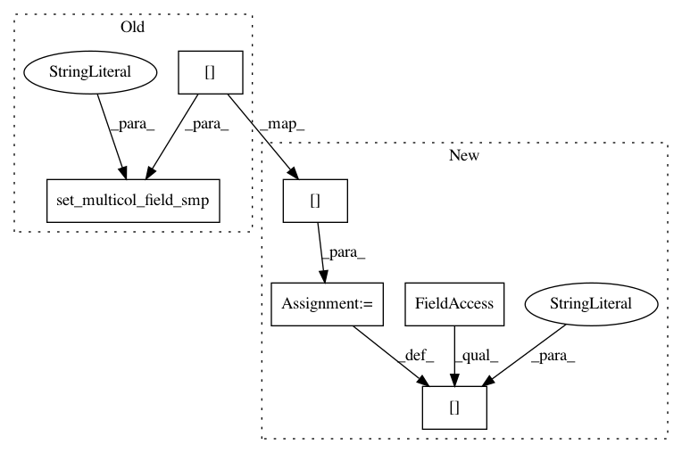

602889dacfc8b85581ac7e27129f982235b54b7e,scanpy/tools/dpt.py,,dpt,#Any#Any#Any#Any#Any#Any#Any#Any#Any#Any#Any#Any#Any#,14
Before Change
n_branchings=n_branchings,
allow_kendall_tau_shift=allow_kendall_tau_shift, flavor=flavor)
dpt.update_diffmap()
adata.set_multicol_field_smp("X_diffmap", dpt.rbasis[:, 1:])
adata.smp["X_diffmap0"] = dpt.rbasis[:, 0]
adata.add["diffmap_evals"] = dpt.evals[1:]
adata.add["data_graph_distance_local"] = dpt.Dsq
adata.add["data_graph_norm_weights"] = dpt.Ktilde
After Change
n_branchings=n_branchings,
allow_kendall_tau_shift=allow_kendall_tau_shift, flavor=flavor)
dpt.update_diffmap()
adata.smpm["X_diffmap"] = dpt.rbasis[:, 1:]
adata.smp["X_diffmap0"] = dpt.rbasis[:, 0]
adata.add["diffmap_evals"] = dpt.evals[1:]
adata.add["data_graph_distance_local"] = dpt.Dsq
adata.add["data_graph_norm_weights"] = dpt.Ktilde
In pattern: SUPERPATTERN
Frequency: 3
Non-data size: 6
Instances
Project Name: theislab/scanpy
Commit Name: 602889dacfc8b85581ac7e27129f982235b54b7e
Time: 2017-11-11
Author: f.alex.wolf@gmx.de
File Name: scanpy/tools/dpt.py
Class Name:
Method Name: dpt
Project Name: theislab/scanpy
Commit Name: 602889dacfc8b85581ac7e27129f982235b54b7e
Time: 2017-11-11
Author: f.alex.wolf@gmx.de
File Name: scanpy/tools/diffmap.py
Class Name:
Method Name: diffmap
Project Name: theislab/scanpy
Commit Name: 602889dacfc8b85581ac7e27129f982235b54b7e
Time: 2017-11-11
Author: f.alex.wolf@gmx.de
File Name: scanpy/data_structs/data_graph.py
Class Name:
Method Name: add_or_update_graph_in_adata